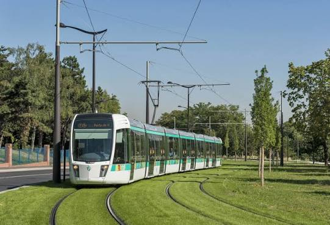

Le conducteur de tramway à la RATP (parfois appelé traminot) est un professionnel chargé de transporter quotidiennement des milliers de voyageurs en milieu urbain. Ce métier à forte responsabilité allie autonomie technique, rigueur ferroviaire et relation client.
|
 |